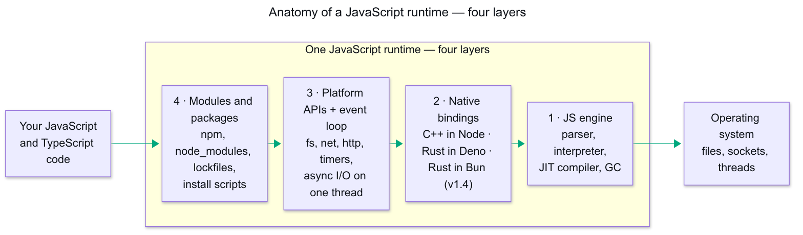
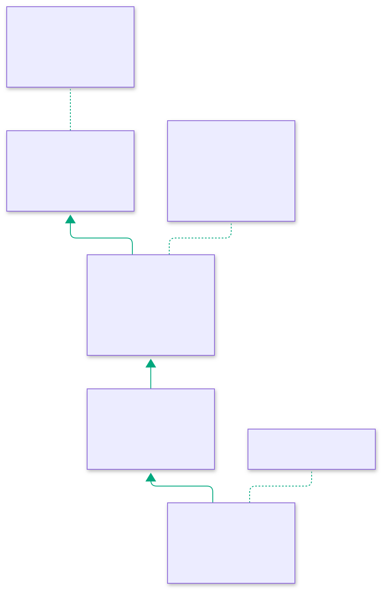
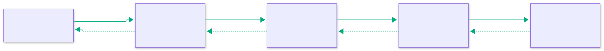

Deck 12 · the runtime war, measured
The war on JavaScript runtimes. Three entered. Two are left.
"Should we move to Bun?" looks like one question. In a large production monorepo it is four decisions with very different risk — package manager, script runner, server runtime, bundler. Deno just left the field to Cloudflare, so this deck measures the two left standing: what worked, what broke, and the phased path I would take.
Bun 1.3.10 · 1.3.11
Node 24 · pnpm 10
2 sibling monorepos + a newer API
4 adoption tiers
Deno → Cloudflare · Oct 2026
single runs, not benchmarks
02 · the territory
First, the territory: what a runtime actually is.
The language is specified elsewhere and looks the same everywhere. A runtime is the program around it that reaches the real world — files, sockets, timers, processes. Four layers:

Code enters at layer 4 and every request for the real world ends at the OS. Click to zoom.
Why this picture carries the whole deck: the engine (layer 1) is a solved problem in all three runtimes. "Compatibility" is a layer-4 property — how code loads — plus a slice of layer 3. That is where the war is fought.
03 · the territory
Same anatomy, three different builds.
| Layer | Node | Deno | Bun |
|---|
| 1 · Engine | V8 [15] | V8 [18] | JavaScriptCore [17] |
|---|
| 2 · Bindings | C++ | Rust — Rusty V8 [18] | Rust since v1.4 — was Zig [19] |
|---|
| 3 · Loop + APIs | libuv [16] | own, on Rust | own, on Rust (Zig ≤ 1.3) |
|---|
| 4 · Modules | npm + node_modules | URL-first → npm since Deno 2 [14] | npm-compatible from day one [1] |
|---|
The rows that matter are 3 and 4. Deno rewrote layer 4 and spent four years walking it back [13][14]. Bun started at Node's layer 4 and never left it. Every verdict in this deck is a verdict on Bun's layer 4 — the gaps you'll see are loading-and-API gaps, not engine gaps.
04 · the war so far
Three runtimes went to war. The field just narrowed.
2009 · the incumbentNode
The gravity well. Every tool, tutorial, and CI image in this report's baseline targets it first — 17+ years of ecosystem compounding.
2020 · the reformer — exited 2026Deno
Node's original author's clean-slate rethink: TypeScript- and security-first, famously without npm [13]. Deno 2 reversed the founding bet — full Node/npm compatibility [14]. Joined Cloudflare, Oct 2026 [12].
2022 · the challengerBun
Entered from the opposite direction: Node-compatible from day one, selling raw speed [1]. Now the last independent challenger — bindings rewritten Zig → Rust in v1.4, May 2026 [19].
What Deno's exit teaches — and why it frames this deck: clean slates lose to ecosystem gravity. Deno even shipped npm compatibility and still consolidated. So this report measures Bun by its Node compatibility — the gaps, the one missing node:v8 call — not by its speed claims.
05 · the war so far
How they ship: release trains and support windows.
| Node | Deno | Bun |
|---|
| Cadence | major every 6 months [21] | stable minor every 12 weeks [20] | frequent stable + canary [19] |
|---|
| LTS | even lines only — 30 months of support [21] | LTS channel since 2.1 — ended Apr 2026 [20] | none |
|---|
| Can you sit still? | yes — pin an even line, quiet for ~2 years | no — maintenance mode under Cloudflare [12] | no — keep moving |
|---|
Why it matters to the ladder: at tiers 1–2 a moving runtime is a cheap version bump in CI. At tier 3, "no LTS" means the pinned version carries no promised support window — and the 1.3 → 1.4 minor bump carried a full Zig → Rust rewrite of ~535K lines [19]. This deck's probes ran on 1.3.10, the last Zig line.
06 · the frame
The one-word answer is always wrong.
"Should we move to Bun?" gets a yes or a no — and with Deno joining Cloudflare this month, Node and Bun are the only two independent runtimes left. But "Bun" is four separate tools, and each one can be adopted — or rejected — on its own:
| Tier | What it replaces | Verdict from the field |
|---|
| 1 · Package manager | pnpm install | yes — with two config truths |
|---|
| 2 · Script + test runner | pnpm run launching tools | yes — launch, don't force |
|---|
| 3 · Server runtime | node dist/… under PM2 | not yet — one unexplained exit |
|---|
| 4 · Bundler | webpack 5 via Vue CLI | no — move to Vite instead |
|---|
Everything that follows is evidence for those four verdicts — measured on throwaway copies, single runs, dummy config, no reachable database. Treat every timing as direction, not benchmark.
07 · the case study
The subject: two sibling production monorepos.
what's inside
Each repo, 5 packages
Vue client + Express server + three shared TypeScript packages. Server: Mongoose 6 on the mongodb 4 driver, BullMQ, ioredis, socket.io, sharp, puppeteer, module-alias path aliases. Client: Vue CLI on webpack 5.
the baseline
Node 24 · pnpm 10
Built with tsc, started with node dist/… under PM2. CI and Docker both on a node:24 image. Tool under test: Bun 1.3.10.
read this before any numberProbes ran on throwaway copies with dummy config — no secrets, and no reachable database or Redis, so "boots" means reached the connect stage. Every number is a single run on one machine under other load, warm pnpm store. Failures here are findings, not verdicts on Bun the project.
08 · the ladder
Four tiers, climbed one at a time.

Risk rises with every tier — and each tier can be adopted or rejected on its own. Click to zoom.
The mistake to avoid: treating tier 1's easy win as evidence for tier 3. Different tier, different risk, different evidence needed.
09 · tier 1 — package manager
Tier 1 works. It's just not faster here.
bun install read the existing pnpm-lock.yaml and resolved exactly the same set — 2 181 and 1 963 packages, zero differences. The timings:
| Install | Repo A (larger) | Repo B (smaller) |
|---|
| pnpm, warm store | 17.2 s | 17.0 s |
|---|
| Bun, cold cache | 45.7 s | n/a |
|---|
| Bun, warm cache | 22.8 s | 23.2 s |
|---|
| Bun, --linker hoisted | 18.8 s | not run |
|---|
This is where the hype and the measurement part ways. On a warm pnpm store, Bun was not faster at installing — and node_modules stayed around 1 GB either way. If you were hoping for a big install-time win, this tier doesn't give you one.
10 · tier 1 — what actually bites
Two details matter more than speed.
🔑 The trust model is not shared
Bun ignores pnpm's onlyBuiltDependencies and uses its own trusted-dependency list. With sharp and puppeteer postinstalls in play, you must set trustedDependencies explicitly — or lifecycle scripts silently don't run the way pnpm ran them.
📦 The default linker is not pnpm's
Bun's isolated linker does not reproduce shamefully-hoist. Anything that works only because pnpm hoists breaks — the Vue CLI build failed immediately on a missing Babel plugin until --linker hoisted fixed it.
So tier 1's verdict: works, resolves identically — adopt it optionally, with linker = "hoisted" and explicit trustedDependencies, and keep the pnpm lockfile for rollback. Just don't adopt it for speed that isn't there.
11 · tier 2 — scripts and tests
The pattern: launch is safe, force is where surprises start.
✅ Where Bun won
Shared-package builds: 9.2 s → 5.6 s, output byte-identical.
vue-tsc under --bun: 2× to 4× faster — 36.8 s vs 81.5 s, and 5.2 s vs 20.9 s. Zero errors. That's a real CI win.
❌ Where Bun lost
Server tsc forced onto the Bun runtime: 86.8 s vs 46.7 s on Node — the compiler got slower, not faster.
bun test on the full suite: hung past ten minutes, killed. One pure unit file passed.
The distinction that explains all of it: Bun launching a tool (Node runtime underneath) — safe, sometimes faster. Bun's runtime forced onto the tool (--bun) — that's where vitest died too, next slide.
12 · tier 2 — the crash explained
One failing test file, one missing Node API.
# Repo B, vitest with Bun's runtime forced:
NotImplementedError: node:v8 isBuildingSnapshot is not yet implemented in Bun
# trace: mongodb-memory-server → bson@7.3.3 → v8.startupSnapshot
# same repo, older bson@7.2.0 → passes. Repo A resolves 7.2.0 → passes.
- A plain dependency bump can flip this. Nothing in your code changes — bson moves from 7.2.0 to 7.3.3 and every test file fails under --bun.
- Not just me: a community write-up and a hosting-forum thread report the same node:v8 snapshot gap.
- Fix today: pin bson where the gap bites, and re-check Bun's release notes — this is the kind of gap that closes.
13 · tier 3 — server runtime
The server boots, and everything loads.
Compiled output and TypeScript source both ran through queue and Redis setup, and the path alias resolved. Then small probes, one by one:
probes · passedData layer
mongoose 6, the mongodb 4 driver, ioredis, bullmq — all load and answer.
probes · passedHeavy natives
sharp, headless puppeteer — including PDF output — work under Bun.
probes · passedEdge + plumbing
socket.io (polling and websocket), module-alias path aliases — fine.
8 of 8 probe categories pass, and .ts source runs directly — but "passed" means the probe completed: with no reachable database, the full app never served a request.
14 · tier 3 — what stopped me
Then the part that stopped me cold.
the unexplained exitDatabase deliberately unreachable. The full app — in both repos — exited with code 1 about 30 to 40 seconds after the connection failed. Node, same code: stays alive and logs the error. Small Mongoose and logging probes behave identically on both runtimes, so the cause could not be isolated. Never tested against a reachable database.
👀 bun --watch ≠ nodemon
No ignore glob, and in my test the process ID did not change across a restart. Not a drop-in.
⚙️ PM2 can run Bun…
interpreter: bun works — but existing node_args heap flags don't apply. Your memory tuning silently disappears.
Why this one blocks the tier: an unexplained process exit is cheap to find in a probe and expensive to find in production. Explain it against a real database first, then soak-test on staging.
15 · tier 4 — bundler
The webpack client: this is where it fell over.
| Vue CLI build attempt | Result |
|---|
| Node, baseline | 3:36 — works |
|---|
| Bun default (isolated) install | fails at once — missing Babel plugin |
|---|
| Hoisted install + bun --bun | fails after 5:21 — two CSS data-URL errors |
|---|
| Repo B, hoisted + bun --bun | hangs 28 min at 0% CPU — killed (Node: 1:43) |
|---|
Every Bun path is slower or dead — and a 28-minute silent hang inside a type-checker child process is the worst failure mode there is: no error, no progress, no clue.
16 · tier 4 — the actual move
The client's real problem isn't Bun. It's webpack.
- Vue CLI is in maintenance mode — and it points users to Vite itself. The tool under your client is already end-of-life-ish.
- The port is estimated at 3 to 6 days per client — webpack config, polyfill fallbacks, an HTML asset rule, the PWA plugin, two process.env uses → import.meta.env. An estimate, not a measurement.
- It's worth doing regardless of Bun. The client build was the slowest part of the toolchain on Node already.
Sequencing beats heroics: move the client to Vite for its own reasons — then ask what Bun's bundler adds. Don't entangle the two migrations.
17 · a second data point
A newer API, a very different result.
Express 5, TypeORM 1.x on PostgreSQL, BullMQ, native bcrypt, about 570 tests. Real database and Redis this time, on Linux with Bun 1.3.11.
| Check | Result on Bun |
|---|
| Tests, unchanged | 16 failures, 1 error — one root cause |
|---|
| Tests, after two small changes | all pass in ~3 s (Jest: 9.5–10.6 s) |
|---|
| Boot, SIGTERM, background worker | works; exits in under 20 ms |
|---|
| Native bcrypt logins, CRUD, validation, rate limit | same as Node |
|---|
| S3 upload (local fake) | signed request intact; bad content refused |
|---|
No unexplained exit this time. The same runtime that exited on the older tree ran this one cleanly — consistent with a specific dependency combination, not Bun's server runtime in general. Vite builds were also about equal on both runtimes.
18 · a second data point
One fix, and a design constraint.
Circular entity imports
Cannot access 'X' before initialization. Wrapping 17 relation fields in TypeORM's Relation<T> [22] fixed it — type-only, no behaviour change. Tests also need a bunfig.toml preload [23], because Bun ignores Jest config.
More than one instance
PM2 cluster mode didn't run Bun in my check. reusePort works on Node and Bun.serve [24][25], but was ignored on node:http in 1.3.11 — so Express on Bun can't hot-reload on one port.
The answer: two single-process instances behind a proxy, restarted one at a time. With OxMgr 0.5.0 [26] and a probe every 50 ms: 111 probes, one instance down in 28, both down in none. A single-instance reload dropped 25 of 205. OxMgr worked, but it is 0.x from one maintainer — PM2 fork mode or systemd first.
19 · transfer to your repo
What would bite in your own repo.
- Native modules + postinstall scripts — Bun's trust model differs from pnpm's; list trustedDependencies explicitly.
- Hidden hoisting assumptions — if a tool works only because pnpm hoists, the isolated linker will break it.
- Node API gaps — node:v8 snapshot support missing in 1.3.10; a dependency bump can trigger it.
- Environment loading — Bun auto-loads .env. CI pipelines that write NODE_ENV=production into that file silently change behaviour.
- Memory flags — heap flags tuned for Node don't carry to Bun (and even the Node baseline needed headroom here).
- Docs gaps — no official Bun guidance found for Mongoose, puppeteer, sharp, or Bitbucket Pipelines; the Docker guide covers a basic image only.
20 · the migration path
Phased, with a rollback at every step.

Four phases, each exitable — rollback is part of the design, not an afterthought. Click to zoom.
- Bun as package manager, optional — hoisted linker, explicit trustedDependencies, keep pnpm-lock.yaml. Rollback: delete bun.lock, run pnpm i.
- Bun to launch scripts — tsc stays on the Node runtime, vue-tsc goes --bun, pin bson where the v8 gap bites.
- Client to Vite — independent of Bun; the real fix for the slowest toolchain step.
- Bun as server runtime, last — older tree: only after the exit-on-DB-failure is explained against real services. Newer API: worker first, then two single-process instances restarted one at a time. Staging soak test either way.
21 · the decision
Stay or go? Evidence, not vibes.
🛑 Stay put when…
Install time is already fine and nobody is asking for Bun — tier 1 gave no speed win here.
You rely on native modules + a webpack client and can't afford a soak test.
Your tests depend on in-memory database helpers that touch Node internals.
🚀 Migrate when there's a concrete payoff
Faster type-checking in CI — the vue-tsc 2–4× win is real and repeatable.
One fewer tool to install — a runtime, package manager, and runner in one binary.
A fresh service with no legacy baggage — no webpack, no hoisting history, no heap-flag folklore.
And the line I'd hold: I would not switch the production runtime today. Tiers 1–2, yes; tier 3 earns its way in with an explained failure and a soak test.
22 · open ends
What I would verify next.
- Re-run the server probe against real MongoDB and Redis — explain the exit code 1 before any runtime conversation continues.
- Repeat the install timings — several runs, cold pnpm store, before claiming install parity either way.
- Track Bun releases for the node:v8 gap — when it closes, tier 2's biggest caveat shrinks with it.
0
production switches made
23 · references
Sources — primary first.
24 · take it away
Bun is not one decision. Make four of them.
Take the easy wins at the bottom of the ladder, fix the client where it actually hurts, and make the runtime earn its way in. Rollback at every step.